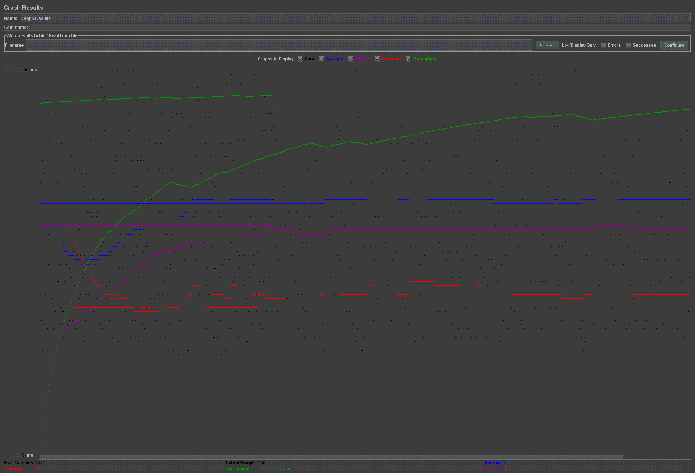

| Single-instance version cases |
Graph Results Screenshot |
Average Query Time(ms) |
Average Search Servlet Time(ms) |
Average JDBC Time(ms) |
Analysis |
| Case 1: HTTP/1 thread |
 |
23 |
14753102 |
2.43 |
1 Thread has a smaller TS and TJ time than 10 threads |
| Case 2: HTTP/10 threads |
 |
26 |
16725204 |
5.70 |
The TS is about 12% slower than 1 thread, and the TJ is over 2 times longer than 1 thread TJ. |
| Case 3: HTTPS/10 threads |
 |
32 |
17242764 |
7.39 |
HTTPS is slower than 10 Thread HTTP |
| Case 4: HTTP/10 threads/No prepared statements |
 |
34 |
210353 |
11.64 |
This should be slower than regular scaled threads since no prepared statements are slower, not sure why it's this. |
| Case 5: HTTP/10 threads/No connection pooling |
 |
30 |
100317 |
8.57 |
No connection pooling is faster than connection pooling 10 Thread. |